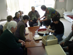
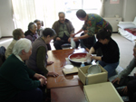
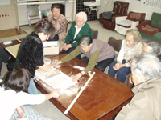

生きがいデイサービスご利用案内
《老人福祉センター塩つぼの湯まで自動車で送迎し、食事や入浴、また健康づくりや様々なお楽しみの活動をお手伝いします。》
ご利用いただけるかた
65歳以上で身の回りのことはできるけれど
|
|
| 最近足腰が弱って、高齢者クラブの集まりにもなかなか出られなくなった。 | |
| 外出する機会がなく、近所の人ともあまり顔をあわせることがない。 | |
| 訪ねてくる友人もなく、話し相手がほしい。 | |
（介護保険の認定を受けられているかたはご利用できません）


サービスの内容
| 毎週1回、決められた曜日にご利用いただきます。 | |
日 課 |
時 間 |
| 自動車でご自宅までお迎え | 午前9時〜午前10時 |
| お茶を飲みながらほっと一息 | 午前10時〜午前10時30分 |
| 温泉入浴やおしゃべり | 午前10時30分〜正午 |
| 楽しく昼食 | 正午〜午後1時 |
| お昼寝 休憩（マッサージ機にかかったりおしゃべりしたりご自由に・・・） | 午後1時〜午後２時 |
| 週替わりお楽しみ時間 （お花見や紅葉狩りに出かけることも・・・） |
午後２時〜午後２時45分 |
| お茶を飲みながらほっと一息 | 午後２時45分〜午後３時 |
| 自動車でご自宅までお送り | 午後３時〜午後４時 |
ご利用料金
1回のご利用につき1,000円
ご利用の申し込み・お問い合わせは
お近くの保健福祉サービスセンター内の社会福祉協議会へ
| 中部（ちの・米沢・中大塩） | 電話 82-0360 |
| 西部（宮川・金沢） | 電話 82-1328 |
| 東部（豊平・玉川・泉野） | 電話 82-1521 |
| 北部（湖東・北山） | 電話 77-3172 |
 茅野市社会福祉協議会
茅野市社会福祉協議会